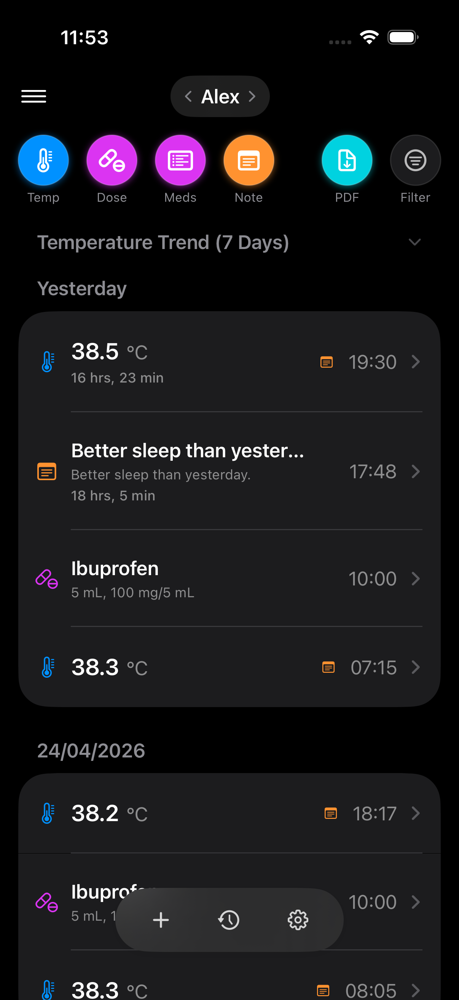

06 / Independent work
Independent products, shipped end-to-end.
MedEtra
iOS · 2025–present
A privacy-first iOS app for organising health information for yourself and people you care about.
Designed and shipped solo: SwiftUI frontend with a mixed cloud backend across Firebase and AWS, including Rust Lambda services, DynamoDB workloads, and Grafana observability. StoreKit 2 entitlements, optional iCloud sync via CloudKit, GDPR-aligned local-first data — the same engineering rigour I bring to client work, applied to my own product.
GenAI is used heavily throughout delivery for code generation and iteration, especially with Claude Code, GitHub Copilot, and Codex. AI-powered summaries are also in active work-in-progress using OpenAI APIs.
SwiftUI
Swift
Firebase
AWS
Rust Lambda
DynamoDB
Grafana
CloudKit
StoreKit 2
Claude Code
GitHub Copilot
Codex
OpenAI APIs (WIP)
